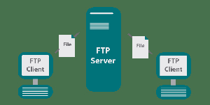

File Transfer Protocol (FTP) is a standard network protocol used to transfer files between a client and a server over a TCP/IP network such as the Internet. It allows users to upload files to a server or download files from a server.
How FTP Works
FTP operates on a client-server model and uses two separate channels:
Command Channel (Port 21): Used to send commands and receive responses between the client and server.
Data Channel (Port 20): Used to actually transfer the files.
Steps in an FTP session:
The FTP client connects to the FTP server using port 21.
The user authenticates using a username and password (or anonymously).
The user can then browse the server's directory, upload files, or download files.
The session ends when the user disconnects.
FTP vs SFTP vs FTPS
FTP: Standard protocol — data is sent in plain text (not encrypted). Not secure for sensitive transfers.
SFTP (SSH File Transfer Protocol): A secure version of FTP that encrypts both commands and data using SSH.
FTPS (FTP Secure): FTP with added SSL/TLS encryption support.
Common Uses of FTP
Uploading website files to a web server when publishing a site.
Downloading large files from an organisation's server.
Transferring files between computers on the same network.
Backing up files to a remote server.
Popular FTP Clients
FileZilla — A free, open-source FTP client widely used for web development.
WinSCP — Popular on Windows, supports FTP and SFTP.
Cyberduck — Available on macOS and Windows.
Illustration

Figure: FTP uses two channels to transfer files between a client and a remote server.